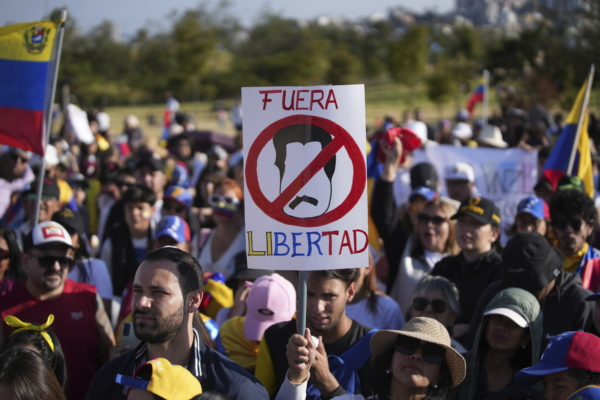

2024年8月3日，在厄瓜多尔首都基多，委内瑞拉民众抗议委国总统选举结果。 （美联社/Carlos Noriega/加拿大) 【2024年08月08日讯】现在这个世界，怪事越来越多。刚刚结束的委内瑞拉大选就出现了一个惊奇：马杜罗要和马斯克决斗。马杜罗是委内瑞拉现任总统，并称自己在刚刚过去的大选中获胜；而美国人马斯克是世界首富和多个科技大公司总裁。这两个看起来风马牛不相及的的世界名人，也都是五六十岁的中老年大叔了，却怎么搞到要决斗了？刚过去的委内瑞拉大选被国际社会认为严重舞弊，它的选举委员会宣布现任总统马杜罗以51%的票数获胜，但是没有公布每个投票区的开票率；而反对党的总统候选人冈萨雷斯却宣布获胜，因其得票率是67%，并且给出证据。
委内瑞拉民众这几天一直上街游行示威抗议大选结果被作弊；委内瑞拉军方暂时还没选边站，而国际社会众多民主国家要求马杜罗要透明选举过程。8月1日，美国国务卿布林肯发声明表示，鉴于压倒性的证据，美国认为，委内瑞拉反对派候选人冈萨雷斯赢得了总统大选。
委内瑞拉在马杜罗执政十年中，让本来富得流油的石油国委内瑞拉由富转贫，全国有超过八成的人口处于贫困线下，通货膨胀率更是上千倍，委内瑞拉成为南美最贫困的国家。这样的人还会高票当选？国民还很支持？听起来就让人匪夷所思。但是，做事情是讲证据的。如果马杜罗能拿出证据，证明饿着肚子的国民还很爱戴他，愿意选他，那么别人也不能说什么。问题是，反对党候选人拿出了自己得胜的证据，而马杜罗却迟迟拿不出证据，这可怎么服众，怎么让国民服气，让国际承认？
所以二马的约架就这么产生了。马斯克搞科技赚钱之余，对大事小事都很关注，总要在X上喋喋不休评论一番。对这个疑云重重的大选，自然不会放过。而马杜罗总得找出一个替罪羊为自己拿不出证据背锅，这个“五百年前是一家”的兄弟居然怀疑自己的选举，那么就指责他好了。所以马杜罗就指责马斯克搞了什么火箭之类的破坏委国选举系统，还要和他“战斗”。
嗨，这一番“战斗”邀约可把看热闹不嫌事大的网友乐坏了，纷纷问马斯克敢不敢应战。马斯克这种阿尔法男岂会示弱？他当然毫不犹豫地应战，而且还开出输赢条件。如果马杜罗输了，那么乖乖让出总统位置；如果马斯克输了呢，那就免费把这位马家老兄送去火星旅游一把。
从马斯克的条件看，马杜罗赢了是输，输了更是输，想来他不会答应。但是领袖越“伟大”，就越不能失面子，他要如何体面拒绝或者开出他自己的条件？如果开打，必然得找一个第三方国家，免得出现什么躲在斜房顶上狙击手给马弟弟耳朵一枪。双方是拳击还是射击？这个具体还没说。更可能的是拳击。不过马杜罗比马弟弟大了九岁，体力上可能略差一筹，打输了那个惨样被媒体拍去传到全世界，他就太尴尬了。
这次约架，不知马斯克妈妈会不会又一次出来阻拦。去年马斯克和脸书小扎硬生生就要比武，马妈妈吓得不行，好说歹说，吵架可以，打架不行，总算把打架压下去了。这次一个总统约架儿子，她该如何劝说才能平息这场比武？
责任编辑：文芳